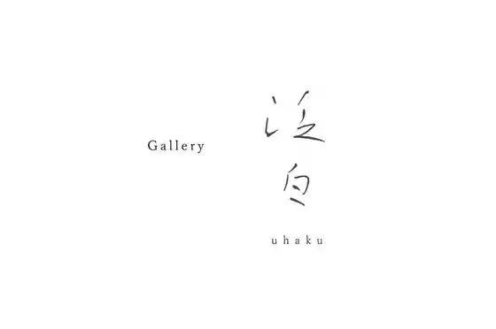
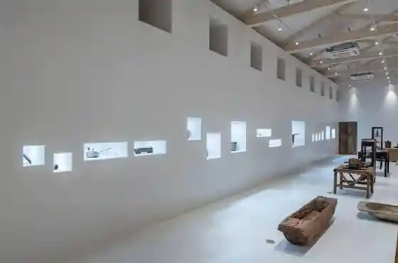
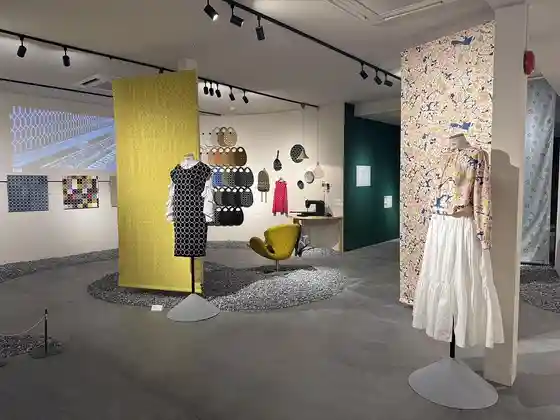

NOUNIYELL (VISON)
Taki, Mie · 0598-67-8299 · Official / source link
Gallery Han Shiro uhaku (VISON)
Taki, Mie · 0598-39-3190 · Official / source link

KATACHI museum / salon (VISON)
Taki, Mie · 0598-67-0725 · Official / source link

minä perhonen museum / minä perhonen museum shop (VISON)
Taki, Mie · 0598-67-6467 · Official / source link

ani TERRACE (VISON)
Taki, Mie · 0598-39-3190 · Official / source link
VISON Sauna (VISON)
Taki, Mie · 0598-39-3900 · Official / source link
BUGGYPARK VISON
Taki, Mie · Official / source link
Go Katsura Ike Furu Tsu Village Buruberii Kari
Taki, Mie · 0598-67-7776 · Official / source link
Taishi Village (Kaika Joho Mo Keisai)
Taki, Mie · 0598-49-4522 · Official / source link
Gokatsura Ike Furusato Mura
Taki, Mie · 0598-67-6196 · Official / source link
Yahashira Shrine
Taki, Mie · 0598-38-1117 · Official / source link
Nakayama Yakuso Yakuju Park Genjo no Kan
Taki, Mie · 0598-49-3933 · Official / source link
Genjo no Ashiyu
Taki, Mie · 0598-49-3933 · Official / source link
Gokatsura Ike Dobutsu Park
Taki, Mie · 0598-67-5973 · Official / source link
kiond Ennichi
Taki, Mie · Official / source link
Ki to Mori no Experience Shisetsu kiond
Taki, Mie · 0598-67-4291 · Official / source link
Fureai no Kan
Taki, Mie · 0598-49-4005 · Official / source link
Seiwa no Mori Mauntembaikukosu
Taki, Mie · 0598-49-4800 · Official / source link
Tenkei Park Fuwafuwa Yama Domu
Taki, Mie · Official / source link
Cazacle Saikuringusuteshon
Taki, Mie · 0598-49-4800 · Official / source link
Taki Go Katsura Ike Furusato Mura Campground
Taki, Mie · 0598-67-6196 · Official / source link
Tanjo Sanshin Miyadera (Tanjo Taishi)
Taki, Mie · 0598-49-3001 · Official / source link
Tanjo Suigin Ko Ato
Taki, Mie · 0598-38-1117 · Official / source link
Kin Hase Tera
Taki, Mie · 0598-49-3001 · Official / source link
Chidorigase no Muku no Ki Saigyo Kahi
Taki, Mie · 0598-38-1117 · Official / source link
Hokogase no Uba Kami
Taki, Mie · 0598-38-1117 · Official / source link
Mae Village Mezu Kannonzo
Taki, Mie · 0598-38-1117 · Official / source link
So Kase Jizo Mikoto
Taki, Mie · 0598-38-1117 · Official / source link
Fushi Ogami Saka
Taki, Mie · 0598-38-1117 · Official / source link
Shi Hikita Dai Joya Tomoshibi
Taki, Mie · 0598-38-1117 · Official / source link
Iuchi Hayashi Ipponmatsu to Ibo Jizo
Taki, Mie · 0598-38-1117 · Official / source link
Tochigaike Shitchi Shokubutsu Gunraku
Taki, Mie · 0598-38-1117 · Official / source link
Meki Toge
Taki, Mie · 0598-38-1117 · Official / source link
Sei Sanso (Fureai Forest)
Taki, Mie · 0598-49-3881 · Official / source link
Hosen Tera Garden
Taki, Mie · 0598-38-1117 · Official / source link
Man Kyo Figyua Museum
Taki, Mie · 0598-30-5266 · Official / source link
Go Katsura Ike
Taki, Mie · 0598-38-1117 · Official / source link
Tenkei Park (no Bi no Bi Park Tenkei)
Taki, Mie · 0598-38-2855 · Official / source link
Fugen Tera
Taki, Mie · 0598-37-2888 · Official / source link
Kokosei Resutoran (Mago no Mise)
Taki, Mie · 0598-39-3803 · Official / source link
Yutori no Oka
Taki, Mie · 0598-49-4500 · Official / source link
Nishi Village Ko Kyu Taku Shi no Fu Ki
Taki, Mie · 0598-53-4406 · Official / source link
Goka Shinoyama Joshi
Taki, Mie · 0598-38-1117 · Official / source link
Mae Village no Ogusu
Taki, Mie · 0598-38-1117 · Official / source link
Sakakura Iseki
Taki, Mie · 0598-38-1121 · Official / source link
Nagamori Tera
Taki, Mie · 0598-38-1121 · Official / source link
Hase no Kurumada
Taki, Mie · 0598-37-2359 · Official / source link
Taki Local History Museum
Taki, Mie · 0598-38-1132 · Official / source link